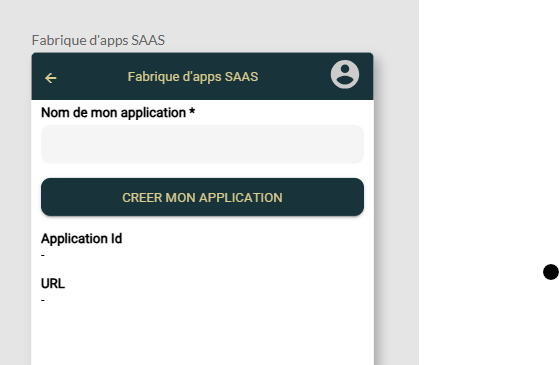
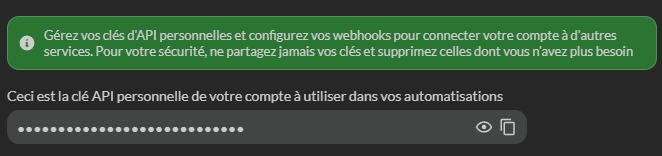
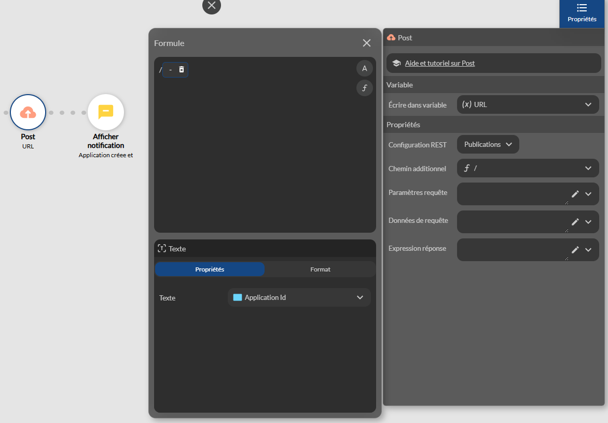
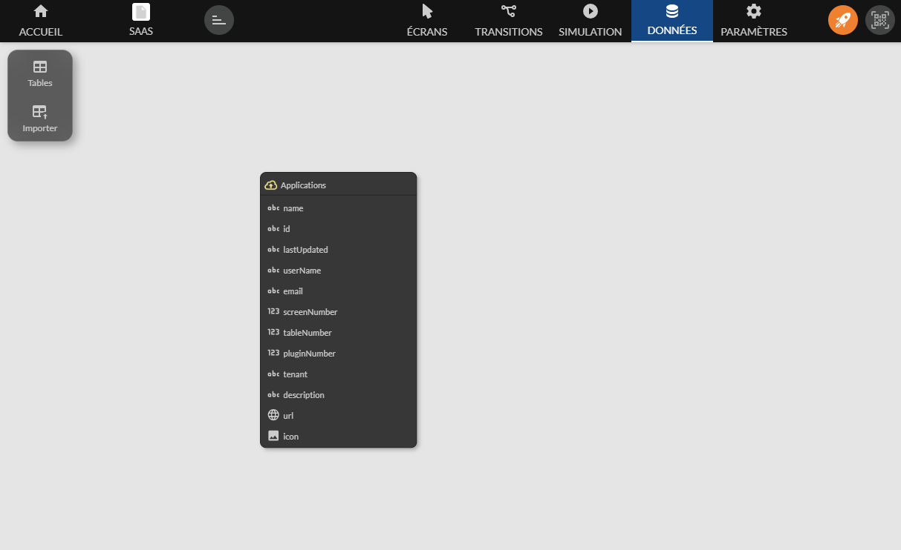

API SAAS
Disponible depuis le plan Entreprise
Introduction
Cette documentation décrit les API disponible pour mettre en place une application Saas qui permet d’automatiser :
- La création d’applications à partir d’une autre application “modèle”
- La publication d’applications
- La modification d’applications
- La synchronisation d’applications
Le préfix de l’URL est : https://www.zyllio.one/api/account/
Documentation des endpoints
| Méthode | Chemin | Headers | Contenu | Commentaire | Réponse |
|---|---|---|---|---|---|
| GET | /applications | x-api-key | - | Liste les applications liées à la clé API | ApplicationSummaryModel[] |
| POST | /applications | x-api-key | CreateApplicationModel | Crée une application depuis un template | string |
| PUT | /sync-applications/:id | x-api-key | SyncApplicationModel | Synchronise une application | void |
| PUT | /applications/:id | x-api-key | UpdateApplicationModel | Met à jour une application | void |
| POST | /publications/:id | x-api-key | - | Publie une application | void |
Types
ApplicationSummaryModel
| Champ | Type | Description |
|---|---|---|
| id | string | Identifiant unique de l’application |
| name | string | Nom de l’application |
| lastUpdated | Date | Date de dernière mise à jour |
| screenNumber | number | Nombre d’écrans |
| tableNumber | number | Nombre de tables |
| pluginNumber | number | Nombre de plugins |
| userName | string | Nom du propriétaire |
| string | Email du propriétaire | |
| description | string | Description de l’application |
| url | string | URL de l’application |
| shares | string[] | Emails ou IDs des partages |
| icon | string | URL ou chemin de l’icône |
CreateApplicationModel
| Champ | Type | Description |
|---|---|---|
| templateId | string | ID du template à utiliser pour la création |
SyncApplicationModel
| Champ | Type | Description |
|---|---|---|
| fromApplicationId | string | ID de l’application source à synchroniser |
| screens | boolean | Synchroniser les écrans (true/false) |
| theme | boolean | Synchroniser le thème (true/false) |
UpdateApplicationModel
| Champ | Type | Description |
|---|---|---|
| name | string | Nom de l’application |
| description | string | Description de l’application |
| icon | string | URL ou chemin de l’icône |
Créer une application SAAS
Clé d’API
La clé d’API est disponible depuis les paramètres de votre compte depuis l’écran principal

Cette section vous permet de copier la clé d’API

Définir les API REST
Il est nécessaire de définir 2 configurations dans les paramètres REST
- applications - pour créer et modifier des applications
- publications - pour publier des applications

puis

Lister les applications
Les applications peuvent être importées depuis l’onglet Données
Cliquez sur le menu Importer puis REST, sélectionnez Applications et enfin Importer

Une table REST, dont le contenu est dynamique, contient les applications. Il vous suffit d’utiliser un composant List ou Grid pour afficher les applications

Créer une application
Supposons que vous souhaitez proposer un écran d’accueil qui permet à vos utilisateurs de créer une application à partir de l’une de vos applications qui sert de modèle

Pour créer une application vous devrez utiliser l’action REST Post selon l’aperçu suivant

Le paramètre templateId fait référence à votre application modèle. Le résultat de cet appel est un nouvel identifiant d’application appelé Application Id
Modifier une application
Pour modifier une application, il faut utiliser une action REST Put
La paramètre Chemin additionnel fait référence à l’application créée par l’action précédente
Notez que la formule contient un / avant la variable
Le paramètre Données de la requête définit le nouveau nom de l’application sous forme JSON comme suit

Veuillez vérifier les espaces et les guillemets
Publier une application
Pour publier une application, il faut utiliser une action REST Post sur la configuration Publications

Voici la série d’actions qui créé, renomme et publie une application